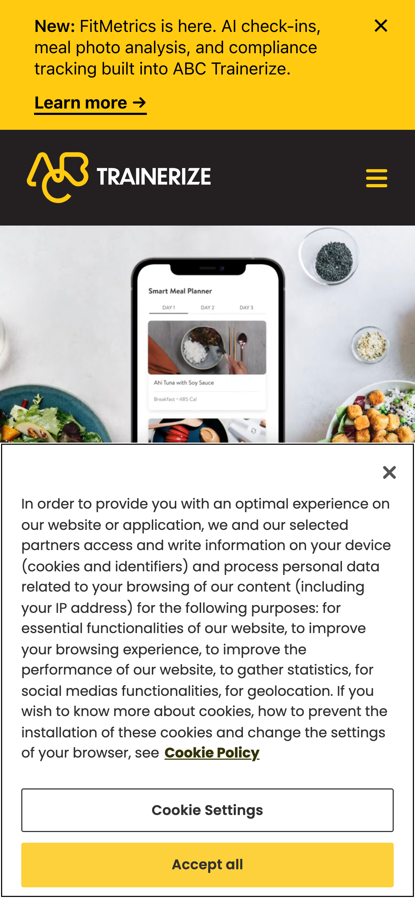
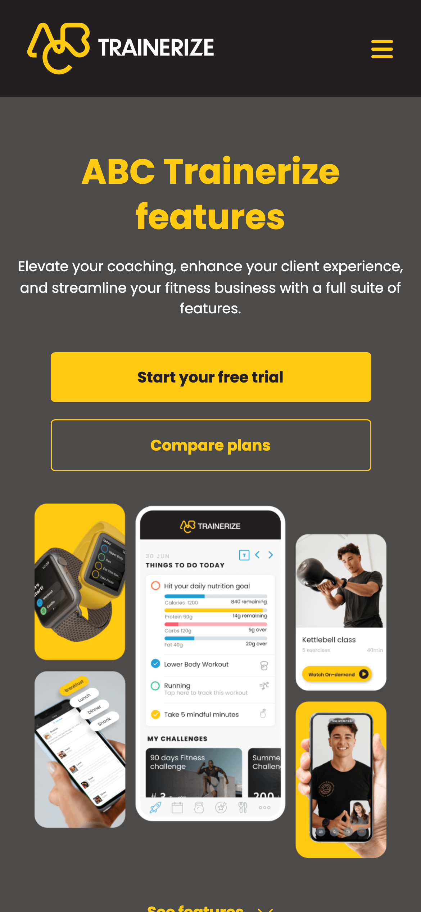
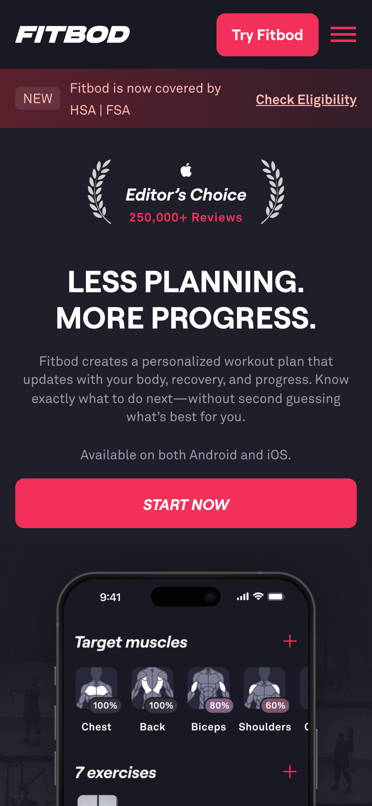
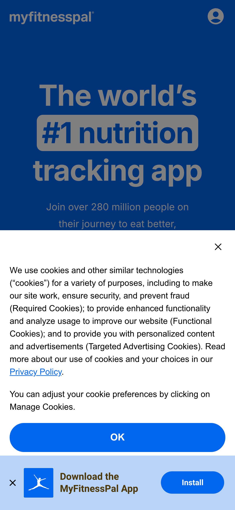
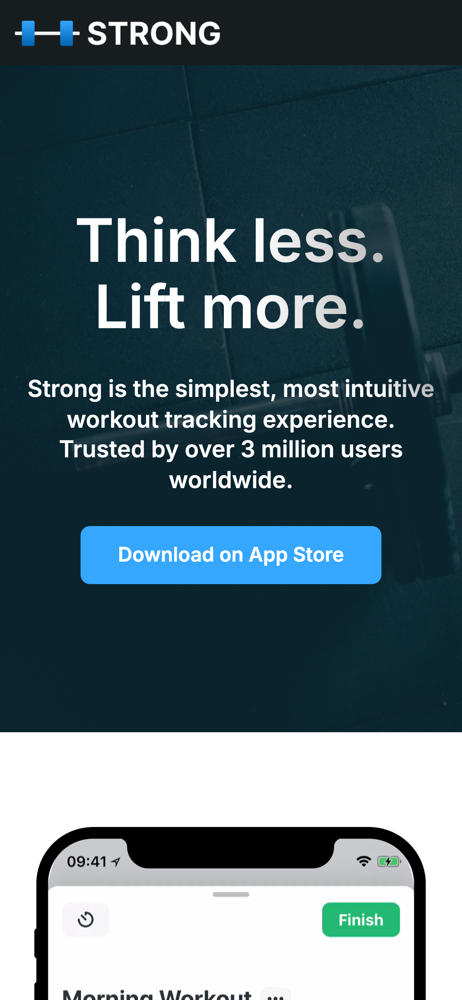

Аналіз ринку для Forge — платформи, що з'єднує атлетів і персональних тренерів. Факти без джерела позначені гіпотеза
14 продуктів у трьох групах. Категоризація — редакційна гіпотеза, ґрунтується на аналізі JTBD і аудиторій.
Платформа "атлет + тренер в одному застосунку": призначення тренувань, трекінг виконання, харчування, прогрес тіла.
Глобальний лідер ринку trainer-client платформ. 400k+ коучів гіпотеза — присутній в СНД-ринку, більшість онлайн-тренерів знають бренд.
Прямий конкурент, менш enterprise-аудиторія. Відомий чистішим UI гіпотеза — джерела підтверджують менше onboarding-тертя.
Комплексна платформа — тренування + харчування + фото-прогрес + оплата. Найближча до повного feature set MVP гіпотеза.
Новіший гравець із сучаснішим дизайном гіпотеза. Демонструє напрямок UX у категорії.
Без тренера, але найпопулярніший workout logger серед аудиторії 22–30 гіпотеза. Звідси прийдуть наші атлети.
"Отримати персональний план і мати прозорий зв'язок / підзвітність по прогресу."
Це не продукт — це поведінка. Більшість українських тренерів ведуть клієнтів саме так гіпотеза. Наш справжній конкурент у статус-кво.
Self-tracking без тренера. Доводить: люди логують якщо UX зручний і є соціальний контекст гіпотеза.
Закривають "знайти тренера", але не "вести клієнта" гіпотеза. Показують gap, який Forge заповнює.
Self-guided програми — альтернатива без тренера. Конкурують за увагу атлета гіпотеза.
Продукти зі сильним UX, data viz і преміальним позиціюванням.
Найближчий до Forge серед преміальних. Real coach + app, $149–199/міс гіпотеза — точна ціна може змінитись.
Еталон data visualization у fitness. Показує як подати складні дані красиво гіпотеза.
Strength-focused, чистий UX подачі програм, typography-first гіпотеза.
| # | Конкурент | Причина |
|---|---|---|
| 1 | Google Sheets + Telegram | Реальний конкурент — треба зрозуміти де він ламається |
| 2 | Trainerize | Лідер ринку — baseline для feature set і UX-антипатернів |
| 3 | Future | UX-стандарт категорії, aspirational benchmark |
| 4 | Hevy | Звідси прийдуть наші атлети — їхні очікування |
| 5 | Whoop | Data visualization reference |
Дані з рецензій і офіційних сайтів (джерела — внизу). Позначки без джерела — гіпотеза
| Вісь | Trainerize | TrueCoach | Fitbod | MyFitnessPal | Strong |
|---|---|---|---|---|---|
| Аудиторія | Тренери, студії, фітнес-бізнеси (B2B) | Силові та S&C тренери (B2B, менший масштаб) | Самостійні атлети без тренера (B2C) | Люди, що рахують калорії, схуднення (B2C) | Досвідчені силовики: пауерліфтери, бодібілдери (B2C) |
| Основа продукту | All-in-one coaching бізнес-платформа | Програмування + відео-фідбек на техніку | AI-адаптивна генерація тренувань | Трекінг калорій і макросів, БД 20.5M+ продуктів | Мінімалістичний логгер: сет/повтор/вага |
| Зв'язок тренер↔атлет | Dashboard → app → in-app messaging + відео | Async відео-фідбек: атлет знімає → тренер анотує кадри | Немає — AI замінює тренера | Немає — соцстрічка + AI-chatbot (2026) | Немає — тільки індивідуально |
| Глибина трекінгу | Тренування + нутриція (native+MFP) + тіло + wearables | Тренування + комплаєнс + нутриція via MFP + wearables (Standard+) | Тренування + muscle heatmap + PR. Без нутриції | Нутриція (найглибша) + тренування via інтеграції. Без сну | Тільки тренування + тіло (PRO). Без нутриції |
| Монетизація | Freemium by client count: $9–$225+/міс. Add-ons: нутриція +$45/міс | $30–165/міс by clients. 14-day trial, 90-day money-back | $16/міс або $96/рік. Немає free після trial | Free + Premium $80/рік + Premium+ $100/рік | Free (3 routines) + PRO $30/рік або $100 lifetime |
Знято Playwright, mobile viewport 390×844. Продуктові екрани за логіном позначені [?]





5 принципово різних UX-патернів для two-sided продуктів. Вся секція — гіпотеза (аналітика, не первинне дослідження).
Одна сторона генерує унікальний токен — інша вводить або переходить по посиланню. З'єднання миттєве, платформа — тільки технічний міст.
Slack workspace, Discord server invite, Notion shared space, Calendly booking link, Loom share link.
Відносини між сторонами вже існують поза продуктом. Мета — перенести їх у структурований інструмент, а не встановити нові.
Коли відносин поза продуктом немає. Не масштабується для масового залучення (тренер з 50 незнайомими клієнтами).
Одна сторона створює профіль-оферту. Інша переглядає каталог, фільтрує, вибирає. Платформа = ринок і гарант.
Airbnb, Upwork, Fiverr, більшість маркетплейсів тренерів, PromUA.
Обидві сторони — незнайомці до платформи. Цінність у агрегації, рейтингах, безпеці оплати. Масштаб критичний.
Cold-start — перші тренери без відгуків не отримують клієнтів. Дорого будувати довіру. Погано для нішевих персоналізованих послуг.
Одна сторона надсилає запит. Інша переглядає і підтверджує або відхиляє. З'єднання — результат явного рішення.
LinkedIn connections, Instagram follow (private), GitHub organization, Uber (водій бере замовлення).
Одна сторона "дефіцитна" і контролює доступ. Якість матчу важливіша за швидкість onboarding.
Inbox-колапс при великій кількості запитів. Брак контексту в запиті ускладнює рішення. Тертя при кожному новому клієнті.
Платформа сама пропонує матч на основі даних обох сторін. Жодна сторона не "шукає" активно.
Hinge, Upwork "Best Match", Wolt courier–order matching, OkCupid compatibility.
Велика база з обох сторін, багаті дані для навчання алгоритму. Користувач не знає, кого шукати.
Cold-start — без даних алгоритм рекомендує погано. "Чорна скринька" підриває довіру. Висока вартість помилки матчу.
Обидві сторони висловлюють інтерес. З'єднання тільки при взаємному. Асиметрія знімається — ніхто не може нав'язатись.
Tinder/Bumble, Jobr (кандидат ↔ роботодавець), деякі B2B платформи.
Великий рівнозначний пул з обох сторін, низька вартість кожного матчу, легко переключитись.
Асиметричні відносини (тренер ≠ клієнт за природою). Малий пул. Геймдизайн тривіалізує вибір — погано для дорогої послуги.
Висновки — редакційна гіпотеза, ґрунтується на джерелах з розділу Sources.
Trainerize і TrueCoach кращі на десктопі з боку тренера — мобільний інтерфейс тренера завжди програє клієнтському. гіпотеза — підтверджується відгуками на Trainerize Г2026.
Trainerize і TrueCoach пунтять харчування в MFP. Інтеграція Trainerize зламалась наприкінці 2025. Forge із нативним введенням — архітектурна перевага.
Жоден продукт не робить live coaching основним механізмом. "Тренер призначає → атлет виконує → тренер ревʼюзить" — стандарт категорії.
Fitbod: AI замінює тренера. Trainerize: AI генерує контент для тренера. MFP: AI chatbot поверх логів. Forge — без AI в MVP. гіпотеза
Trainerize/TrueCoach: тренер платить (клієнт безкоштовно). Fitbod/Strong/MFP: атлет платить. Хто платить — той перший у продуктовій ієрархії.
MFP = нутриція, але не тренування. Strong = logging, але без нутриції. Trainerize = широкий, але застарілий і дорогий. гіпотеза
Це не тільки монетизація — це вся продуктова ієрархія. Якщо тренер (B2B): його інтерфейс = основний продукт. Якщо атлет: логіка зворотна. MVP без монетизації відкладає питання, але архітектура потребує відповіді зараз.
Trainerize і TrueCoach уникають і платять нестабільністю інтеграцій. Forge включив ручне введення в бриф. Але чи залишиться пріоритетом при скороченні scope?
Strong і Hevy: кращий logging = мінімум кроків на сет. Але тренеру важливо бачити вагу/повтори/відхилення від плану чи достатньо "виконано/ні"? Від цього залежить складність моделі даних і workout execution screen.
Факти, підкріплені цими джерелами, позначені як факти. Решта — гіпотеза